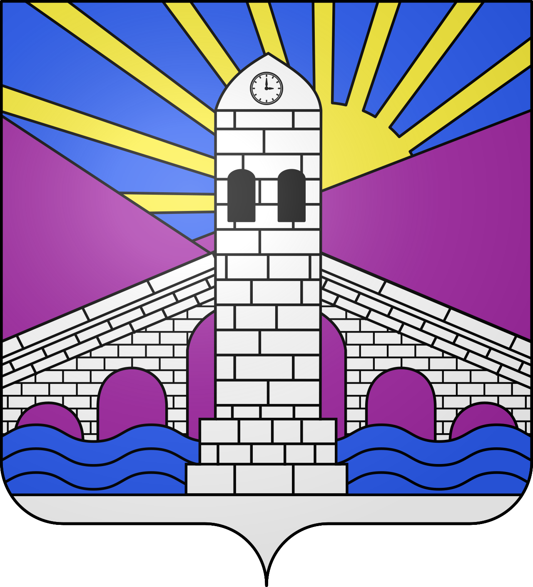

Saint-Jean-du-GardLa porte d'entrée des Cévennes


⟹ Camisards · Châtaigniers · Train à vapeur ⟸

Un carrefour de vallées, avant-poste des Cévennes profondes. Bâti au confluent du Gardon de Saint-Jean et du Gardon de Mialet, le bourg occupe depuis le Moyen Âge une position de charnière entre la plaine languedocienne et les hautes vallées cévenoles. Son nom rappelle un prieuré placé sous le vocable de saint Jean-Baptiste, autour duquel s'est structuré l'habitat médiéval.
La Réforme et le pays des Camisards. À partir du XVI e siècle, les Cévennes adhèrent massivement à la Réforme protestante. Après la révocation de l'édit de Nantes en 1685, qui interdit le culte réformé, la région de Saint-Jean-du-Gard devient l'un des foyers de la révolte des Camisards (1702-1704), insurrection paysanne et religieuse durement réprimée par les troupes royales. Cette mémoire huguenote imprègne encore profondément l'identité du bourg et de ses environs.

Le siècle de la soie. Du XVIII e au XIX e siècle, l'économie locale repose largement sur l'élevage du ver à soie : mûriers, magnaneries et petites filatures rythment la vie des vallées, avant que la pébrine, maladie du ver à soie, puis la concurrence asiatique ne portent un coup sévère à cette activité à la fin du XIX e siècle.
Le chemin de fer et le tourisme cévenol. Le bourg devient au XX e siècle le terminus d'une ligne de chemin de fer secondaire reliant Anduze aux Cévennes, aujourd'hui reconvertie en train touristique à vapeur qui perpétue le souvenir de cette épopée ferroviaire et industrielle.

Aujourd'hui, Saint-Jean-du-Gard conserve une identité marquée par ce passé : bourg-porte des vallées cévenoles, la commune s'inscrit pleinement dans la zone Cévennes, entre mémoire patrimoniale et vie locale contemporaine. Cette continuité, entre héritage et vie quotidienne, fait aujourd'hui tout l'intérêt d'une visite attentive à l'histoire du lieu.
Le bourg garde vivace la mémoire des Camisards, ces insurgés protestants menés notamment par Jean Cavalier et Rolland dans les vallées voisines. L'écomusée des Vallées Cévenoles restitue cette histoire ainsi que celle du travail de la soie et de la châtaigne, piliers de l'identité cévenole.
Chaque année, marché traditionnel et fêtes locales perpétuent l'attachement des habitants à leurs vallées et à un mode de vie rural resté proche de la nature.
Saint-Jean-du-Gard est un seuil : celui où la plaine languedocienne cède la place aux vallées profondes des Cévennes, façonnées par la soie, la châtaigne et la mémoire huguenote.
Repère synthétique — L'Âme des RégionsMialet village voisin de la zone Cévennes, mémoire du désert protestant.
Saint-André-de-Valborgne village voisin de la zone Cévennes, le village de la vallée borgne.
Mont Aigoual point culminant du Gard (1 567 m), avec son célèbre observatoire météorologique et un panorama exceptionnel sur les Cévennes.